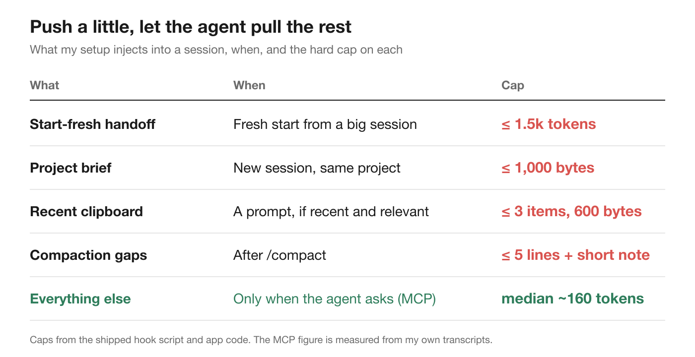
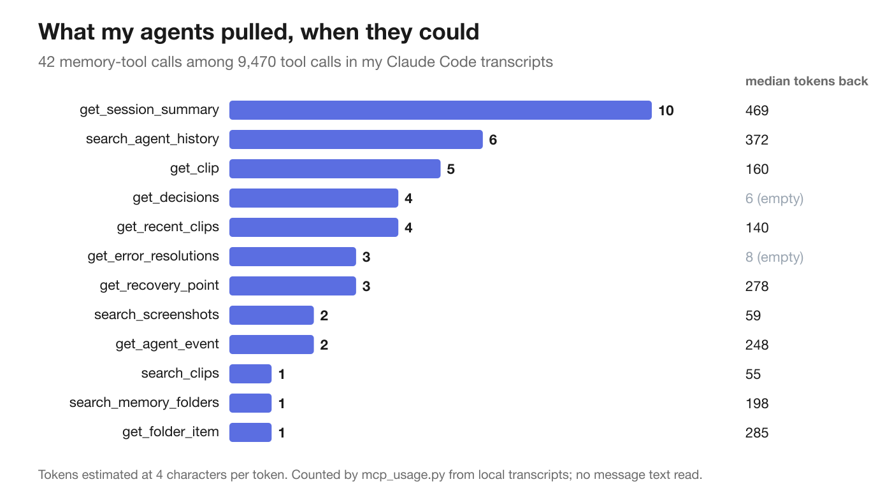

Agent memory works best when it's on a diet: inject only what the agent can't find out for itself, and let it ask for the rest.
Key findings
Picture a Monday morning. You open a fresh Claude Code session on a project you worked on all of last week and type, "Let's finish the export bug."
The agent does what a good engineer new to the codebase would do. It reads the README. It greps for "export". It opens the same six files it opened on Friday. It runs the test that was failing on Friday, and it proposes the fix you tried and threw out on Thursday, because nothing on disk says you threw it out.
Twenty minutes and a pile of tokens later, it's roughly where you were when you shut the laptop.
Every developer who uses a coding agent knows this feeling. The agent is brilliant inside a session and starts from zero in the next one. So it's no surprise that memory add-ons are some of the most popular open-source projects around agents right now. The question I kept coming back to while building one is not whether agents need memory, but how much of it belongs in the context window.
My answer turned out to be: far less than I first thought.
The obvious design is to give the agent everything. Summarize every past session, build an index, and load it at session start. More context, fewer repeated questions.
The trouble is what happens to anything you put at the start of a session. A model remembers nothing between requests, so the agent resends the whole conversation every time it calls the API, and it calls the API a lot. In my own transcripts, a single prompt is a median of 5 API requests (10 on average), because each file read, command and edit is another round trip. Whatever you inject at the start rides along on every one of them, for the rest of the session.
Prompt caching makes those re-reads cheap, but not free, and only while the cache is warm. After a break, the first request rewrites everything, injected memory included, at 12× to 80× the warm price depending on model and cache lifetime. (I measured how much that costs in a separate write-up.)
A two-thousand-token index won't break anyone's budget, and I don't want to overstate this. The problem is the direction of travel. Memory that's injected by default tends to grow with your history, and the context window is also the model's attention. Every paragraph about last month's refactor competes with today's task.
So I started from a different rule.
A coding agent is very good at finding things out. It can read any file, run git log, grep the codebase and run the tests. Telling it what's in your repository is paying twice for something it can look up in one tool call, and the version it looks up is current, while your summary may be stale.
What it can't find out, no matter how clever it is:
That list is short, and that's the point. It's the delta between what's on disk and what was in your head.
Agents give you two ways to hand them context, and they suit different jobs.
Hooks push. Claude Code and Codex run scripts at moments like session start, each prompt and compaction, and a hook can add text to the context. Push is right for the small things the agent needs before it knows to ask.
MCP lets the agent pull. A Model Context Protocol server exposes tools the agent calls when it decides it needs something: search the history, fetch one past event, list the fixes for an error. Pull is right for everything else, because the agent only pays for what it asks for.
And CLAUDE.md? CLAUDE.md (or AGENTS.md for other agents) is push too: it's loaded into every session. That makes it the right place for stable rules the agent can't infer, such as how to run the tests or which conventions to follow, and the wrong place for history. A CLAUDE.md that collects session notes grows forever and rides along on every request. Most of what people now call context engineering comes down to this split: a short, stable file you push, and history the agent pulls when it needs it.
Here's how that split works in the app I build, L2Cache. Every pushed item has a hard cap in the hook script or the app code:

| Context | How it gets there | Cap |
|---|---|---|
| Handoff when starting fresh from a big or cold session | Pushed by a hook | 1,500 tokens |
| Project brief (frequent commands and files) | Pushed by a hook | 1,000 bytes |
| Recent clipboard items that look relevant | Pushed by a hook | 3 items, 600 bytes |
| Facts the compaction summary dropped | Pushed by a hook | 5 lines + 1,500-character note |
| Everything else: transcripts, fixes, decisions, screenshots | Pulled through 12 read-only MCP tools | On demand, median about 160 tokens |
Everything else, from old transcripts and past fixes to decisions, screenshots and clipboard history, sits behind twelve read-only MCP tools.
The worry with pull is that the agent won't bother, or that it'll pull everything and you're back where you started. So I counted. This short script goes through your Claude Code transcripts and reports which MCP tools your agents called and roughly how much text came back. It reads tool names and sizes only, never message text:
"""Which MCP tools do your Claude Code agents actually call, and how much comes back?
Reads ~/.claude/projects/*/*.jsonl. Prints tool names and sizes only, never message text.
Usage: python3 mcp_usage.py [server] e.g. `python3 mcp_usage.py l2cache` for one server's tools.
"""
import glob
import json
import os
import sys
from collections import defaultdict
calls, sizes, pending, total = defaultdict(int), defaultdict(list), {}, 0
for path in glob.glob(os.path.expanduser("~/.claude/projects/*/*.jsonl")):
for line in open(path):
try:
content = (json.loads(line).get("message") or {}).get("content")
except json.JSONDecodeError:
continue
for block in content if isinstance(content, list) else []:
if not isinstance(block, dict):
continue
if block.get("type") == "tool_use":
total += 1
if block.get("name", "").startswith("mcp__"):
calls[block["name"]] += 1
pending[block.get("id")] = block["name"]
elif block.get("type") == "tool_result" and block.get("tool_use_id") in pending:
result = block.get("content")
text = "".join(b.get("text", "") for b in result if isinstance(b, dict)) if isinstance(result, list) else str(result)
sizes[pending[block["tool_use_id"]]].append(len(text) // 4) # ~4 characters per token
mcp = sum(calls.values())
print(f"{total:,} tool calls, {mcp} to MCP servers ({mcp / max(total, 1):.1%})\n")
servers = defaultdict(lambda: [0, []])
for name, n in calls.items():
server = name.split("__")[1]
servers[server][0] += n
servers[server][1] += sizes[name]
print(f"{'MCP server':<28}{'calls':>7}{'median tokens back':>20}")
for server, (n, s) in sorted(servers.items(), key=lambda kv: -kv[1][0]):
s = sorted(s) or [0]
print(f"{server:<28}{n:>7}{s[len(s) // 2]:>20}")
only = sys.argv[1] if len(sys.argv) > 1 else None
tools = {name: n for name, n in calls.items() if only is None or name.split("__")[1] == only}
print(f"\n{'Tool' + (f' ({only})' if only else ''):<34}{'calls':>6}{'median':>8}{'90th pct':>10}{'empty':>7}")
for name, n in sorted(tools.items(), key=lambda kv: -kv[1])[:15]:
s = sorted(sizes[name]) or [0]
empty = sum(t <= 10 for t in s) # 10 tokens or fewer: nothing found
print(f"{name.split('__', 2)[2][:33]:<34}{n:>6}{s[len(s) // 2]:>8}{s[int(len(s) * 0.9)]:>10}{empty:>7}")Run it with python3 mcp_usage.py for every MCP server you use, or add a server's name (for example python3 mcp_usage.py l2cache) to see that server's tools one by one: how often each was called, the median and 90th-percentile size of what came back, and how many calls found nothing.
Across my transcripts, agents made 9,470 tool calls. 42 of them went to the memory tools, in 13 sessions. The earliest of those calls is from Oct 29, so the share is a floor, but the shape is clear:

Three things stood out.
Pulls are rare and small. The median memory call returned about 160 tokens, and nine out of ten stayed under roughly 500. The whole history was available every time; the agent took a sliver of it, when it needed it.
The agent starts with the summary, then drills down. The most-called tool by far was the session summary, followed by search. That's the order the server's own instructions suggest, and it mirrors how I'd catch up myself: get the gist, then look up the one thing I need.
Empty answers are cheap. Decisions and error fixes mostly came back empty, at six to eight tokens, because there was nothing recorded for those sessions. With injection, an empty section is just clutter. With pull, it costs a few tokens to learn there's nothing there.
The best-known open-source answer to agent memory, claude-mem, takes a different route, and it's worth being fair about the trade-offs.
claude-mem runs a second "observer" model alongside your agent. Hooks send each tool call to a local worker, the observer condenses them into short observations, and a summary is written when the session ends. The next session opens with a compact, layered index, and the header can show what each layer costs in tokens, which is a nice touch. Deeper recall goes through MCP tools that search first and fetch details second, the same progressive idea as above. It supports many agents, it's open source (Apache-2.0) with an optional paid hosted observer, it adds semantic search with vectors, and its summaries are written while the work happens, so they read cleanly.
The cost of that design is the observer itself. Summarizing every tool call uses a model, which means tokens, money or plan quota for every session, and a toolchain to run it. Memory also starts empty: it builds up from your second session in a project, unless you run its /learn-codebase command first.
My design makes the opposite bet. The raw material is already on disk: agent transcripts, shell history with exit codes, the git directory, the clipboard and screenshots. Reading it needs no model at all, so remembering costs nothing extra, and existing history can be imported on day one. The price is that summaries built from rules over raw transcripts are rougher than an observer's prose, and keyword search can miss "that auth bug" when the words don't match. It's also Mac-only.
Neither design is wrong. They disagree about where the cost of memory should land: at capture time, or at the moment the agent actually needs something.
Whatever tool you use or build, these held up for me:
An agent with amnesia doesn't need your whole diary. It needs a sticky note and a phone number.
Give it the few facts it can't discover, keep them small, and let it call when it needs more. On Monday morning, that's the difference between twenty minutes of rediscovery and something like "picking up where we left off: the streaming parser was rejected, the failing test is export_large_file, and the next step is the chunked writer."
Combine a small push with on-demand pull. Hooks add a short handoff at session start (goal, files, what's done, what was rejected), and an MCP server lets the agent search past sessions only when it needs something.
Keep CLAUDE.md for stable rules the agent can't infer, like how to run tests. It's loaded into every session, so history added there grows without limit and costs tokens on every request.
Anything injected at session start is resent on every API request, and one prompt is a median of 5 requests in my transcripts. It's cheap while the prompt cache is warm and 12× to 80× more after a break, so keep it small.
Very little in my data: 42 memory calls out of 9,470 tool calls, with a median of about 160 tokens per call and nine in ten under roughly 500.
For how the hooks and MCP tools fit together in detail: Coding agent memory with MCP and hooks. For what goes into a good handoff: Coding agent session handoff.
L2Cache hands coding agents a small handoff and lets them ask your local history for the rest.
Download L2Cache for Mac